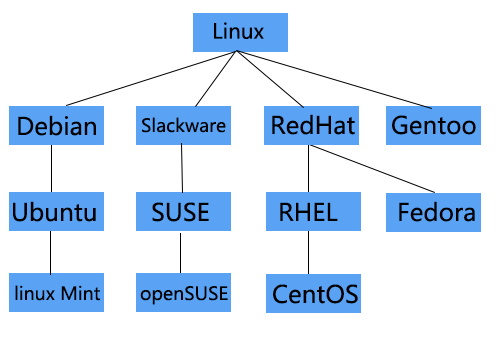

下载:
一、Linux主要发行版:
二、主要发行版下载链接：
(注：本网站只提供官方链接，并不直接提供安装包)Linux内核下载链接：(获取内核源代码，自主设计Linux系统)https://www.kernel.org/
Debian发行版官方下载链接：(APT包赛高!)https://www.debian.org/distrib/
Ubuntu发行版官方下载链接：(界面友好，容易上手)http://www.ubuntu.org.cn/download/desktop
Slackware发行版官方下载链接：(简单就是美)http://www.slackware.com/getslack/torrents.php